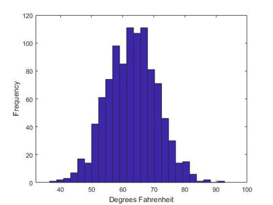
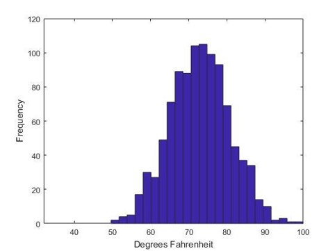
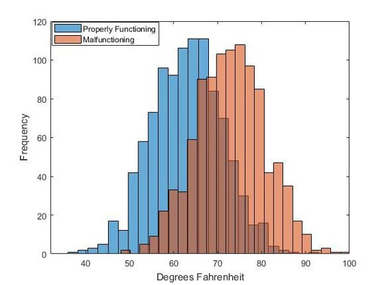

Instructions
We are interested in studying the ability to detect the failure of assembly line machines that build heads lights for cars. We would like for you to imagine that you work in a factory, and you are in charge of monitoring one specific machine on the assembly line. This machine is a very sophisticated injection molding machine that has several internal sensors that measure the operating temperature. This machine pours melted plastic into a mold, lets the plastic cool, and then places a molded plastic headlight cover on the assembly line for further processing.
The machine’s operating temperature is recorded each day. When the machine is functioning properly, the machine produces daily temperature readings that have an average value of 63 degrees Fahrenheit, with a standard deviation of 8 degrees. This figure shows 1000 daily temperatures recorded for a properly functioning injection molding machine.
The injection molding machine can sometimes fail, and begins to heat the plastic to a temperature that is too high.
{{ condition_text_1 }}
The operators at the factory need to be able to figure out when this machine is functioning properly or malfunctioning from observing a week’s worth of daily temperature readings from the machine.
We have 1 year of daily temperature readings from a properly functioning machine and 1 year of daily temperature reading from a malfunctioning machine. We will show you data one week at a time, from each of the 52 calendar weeks. For each week, we will randomly show you data from either the properly functioning or the malfunctioning machine.
For each week, your task will be tell us whether you believe that week’s daily temperature readings came from the properly functioning machine or the malfunctioning machine. For each week you will be asked to rate your confidence in your decision.